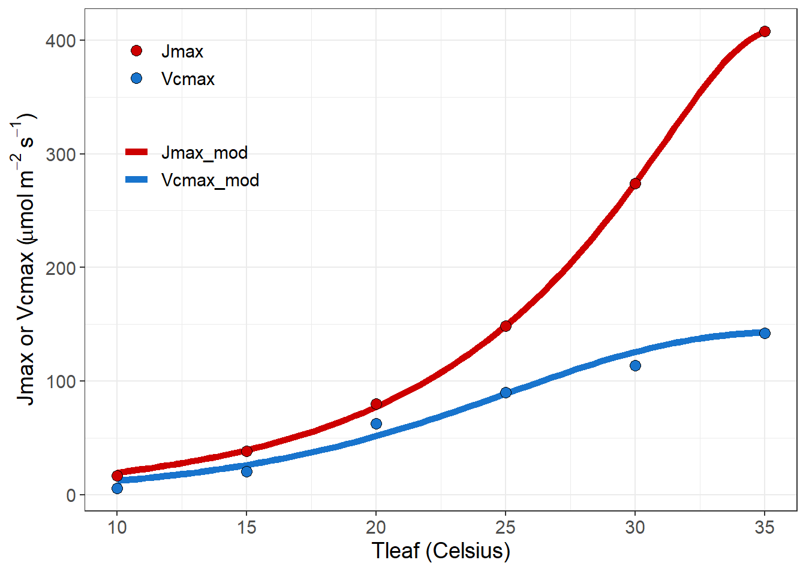

Code
library(plantecowrap)
data <- read.csv(
system.file("extdata", "example_1.csv",
package = "plantecowrap"),
stringsAsFactors = FALSE
)plantecophys 软件包自推出后得到了广泛的关注，2021.11.7 我查了一下谷歌学术记录的引用量为 214 次，但作者对其更新的频率非常缓慢，毕竟离开了科研界。一些新特性的添加估计很难，而 plantecowrap 把二氧化碳响应拟合过程中一些重要的参数的温度响应添加了进去，除了那些基础文献外，主要的计算的主要理论依据来自于 (Bernacchi et al. 2002; Medlyn et al. 2002)，目的是提供相关参数对温度响应的计算，可以作为对 plantecophys 相关功能的补充。
软件包介绍参考 sec. 3，这里使用软件包自带的数据进行演示：
library(plantecowrap)
data <- read.csv(
system.file("extdata", "example_1.csv",
package = "plantecowrap"),
stringsAsFactors = FALSE
)head(data)| X | A | Ci | Tleaf | Press | PPFD | Treat |
|---|---|---|---|---|---|---|
| 1 | 2.154595 | 75 | 10 | 100 | 2000 | 10 |
| 2 | 2.733792 | 100 | 10 | 100 | 2000 | 10 |
| 3 | 3.430289 | 150 | 10 | 100 | 2000 | 10 |
| 4 | 3.834256 | 200 | 10 | 100 | 2000 | 10 |
| 5 | 4.098002 | 250 | 10 | 100 | 2000 | 10 |
| 6 | 4.283738 | 300 | 10 | 100 | 2000 | 10 |
这里使用的是示例数据，上面的代码就是调用软件包示例数据的意思，一般我们也不会这么用。
fits <- fitacis2(
data = data,
varnames = list(
ALEAF = "A",
Tleaf = "Tleaf",
Ci = "Ci",
PPFD = "PPFD",
Rd = "Rd",
Press = "Press"
),
group1 = "Treat",
fitTPU = FALSE,
fitmethod = "bilinear",
gm25 = 10000,
#Allows fitting on an ACi rather than ACc-basis
Egm = 0
)
outputs <- acisummary(data, group1 = "Treat", fits = fits)到这里为止，如果熟悉 plantecophys 的话，一直没有什么新意，只是给 fitacis 改了个名字，然后给 25 摄氏度下的叶肉导度赋值了一个不可能的数据，这样是为了使用 Ci 的数据来进行拟合。下面是关键部分了：
tresp <- fit_topt_VJ(outputs)这里使用这个函数 fit_topt_VJ 来拟合 Vcmax 和 Jmax 对温度响应的曲线，要查看拟合的参数：
tresp[[2]]| Parameter | k25 | Ea | Residual | BIC |
|---|---|---|---|---|
| Vcmax | 75.1461 | 53.45129 | 73.99293 | 53.18597 |
| Jmax | 148.6158 | 78.94620 | 60.95280 | 52.36863 |
这里是显示拟合参数，k25 是指 25 度时候的 Km，Ea 是活化能。响应图形的查看是：
tresp[[3]]
能直接看到 V_{cmax} 和 J_{max} 对温度的响应。
上面的示例是简单的演示，实际应用中肯定是要有很多分组的，分组代码如下，使用相似，为避免篇幅太长，这里的代码不再实际运行。
# eval: false
data2 <- read.csv(
system.file("extdata", "example_2.csv",
package = "plantecowrap"),
stringsAsFactors = FALSE
)
head(data2) X A Ci Tleaf Press PPFD Grouping
1 1 2.154595 75 10 100 2000 10_a
2 2 2.733792 100 10 100 2000 10_a
3 3 3.430289 150 10 100 2000 10_a
4 4 3.834256 200 10 100 2000 10_a
5 5 4.098002 250 10 100 2000 10_a
6 6 4.283738 300 10 100 2000 10_a数据根据 Groping 分为了 a,b两组。
fits2 <- fitacis2(
data = data2,
varnames = list(
ALEAF = "A",
Tleaf = "Tleaf",
Ci = "Ci",
PPFD = "PPFD",
Rd = "Rd",
Press = "Press"
),
group1 = "Grouping",
fitTPU = FALSE,
fitmethod = "bilinear",
gm25 = 10000,
Egm = 0
)
outputs <- acisummary(data2, group1 = "Grouping", fits = fits2)
outputs <-
separate(
outputs,
col = "ID",
into = c("Treat", "Block"),
sep = "_"
)
tresps <- fit_topt_VJs(data = outputs,
group = "Block")这里就是利用率分组信息来区分不同的数据组。和上面没太大区别。这里既然使用了多个分组，那么要获取对应的图形和参数，就麻烦一些，但是作者考虑了这一点，直接写好相关的函数，望文生义即可，就是代表字面意思：
pars <- get_t_pars(tresps)
pars
graphs <- get_t_graphs(tresps)
print_graphs(graphs, path = "./exist_dir")不过上面这段代码所有的内容实际上已经在 tresps 内了，这里仅仅是提取出来方便而已，需要注意，最后图形的导出看上去只是支持临时目录和当前目录，或者是已经存在的目录，即代码里没有做相关目录不存在就先创建目录的处理。